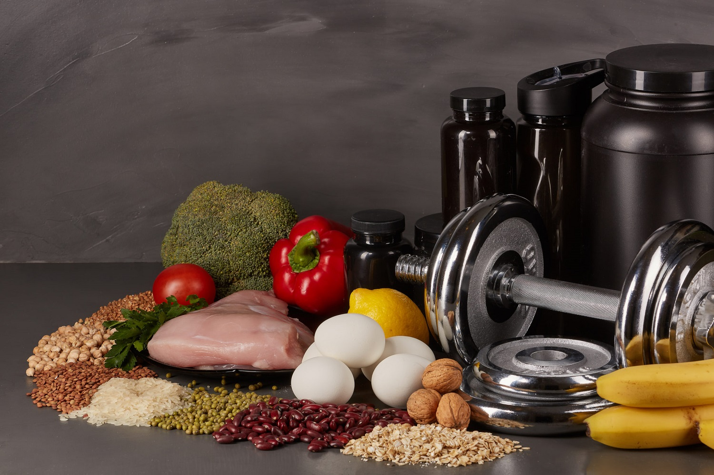

<--Назад
Спортивне харчування
Спортивне харчування породило навколо себе безліч суперечок і питань. У багатьох початківців спортсменів складається упереджене ставлення до цих банках з незнайомими
словами на етикетці через дезінформацію або її відсутності взагалі. Отже, що ж таке спортивне харчування? Насправді, це
«концентрована їжа», що складається з тих же самих компонентів, що і домашня.
Тобто, його отримують шляхом переробки натурального харчового сировини. Але на відміну від домашньої їжі, з спортивного харчування «викинуті» всі шкідливі речовини.
Воно більш повноцінно і засвоюється швидше звичайної їжі, тому навіть невелика порція спортивного харчування може забезпечити організм спортсмена
всіма необхідними поживними елементами. Таке харчування допомагає людям, які займаються спортом, фітнесом або танцями, позбавитися від зайвої ваги
або наростити м’язи в більш короткі терміни. Звичайно, накачати м’язи, схуднути і підтягнутися можна і без допомоги спортивного харчування.
Однак часом це займає надто багато часу і зусиль, а відсутність результатів навряд чи змотивує далі працювати в цьому напрямку. Важливо розуміти, що спортивне харчування –
>це не «чарівні» таблетки і порошки, які можна пити і худнути або нарощувати м’язи, нічого більше не роблячи.
Вони працюють тільки в комплексі із заняттями спортом і фітнесом.
В даний час на ринку представлено широке розмаїття. Кожен сам для себе вибирає краще спортивне харчування в залежності від бажаних результатів.
Всю наявну в реалізації продукцію поділяють на такі види:

білкові добавки - протеїн;
вуглеводн і склади - гейнери;
амінокислоти - ВСАА та інші;
жироспалювачі;
вітаміни;
інші добавки.
До переваг можна віднести:
збільшення енергії під час тренувань;
істотний приріст м 'язової маси при заняттях спортом;
поповнення організму потрібними вітамінами;
правильний розподіл нутрієнтів.
Крім достоїнств присутні і деякі недоліки.
Шкода спортивного харчування може проявитися при наявності індивідуальної непереносимості компонентів.
До інших недоліків можна віднести:
наявність великої кількості підробок;
відносно ви соку вартість;
ймовірність передозування при недотриманні правил прийому.
Можлива шкода спортивного харчування. Ніколи не тренуйтеся на голодний шлунок.
До тренування потрібно обов’язково поїсти – негусто і заздалегідь, мінімум за 1,5-2 години. Якщо не встигаєте нормально перекусити, з’їжте не пізніше,
ніж за годину до початку занять спортивний вуглеводний батончик або просто батончик із сухофруктів і мюслі.
І, обов’язково, випийте приблизно 200 мл рідини. Якщо на тренуванні відчувається слабкість в м’язах або безпосередньо перед тренуванням зрозуміли,
що не заправилися (сил не вистачає, млявість), то вуглеводно-білковий батончик, банан або будь-який інший швидковугевоний продукт допоможе знайти сили для занять.
Що стосується вуглеводного, а точніше, метаболічного вікна, то його найактивніша частина триває протягом години, але взагалі підвищення метаболізму
після тренування триває до двох діб. Тому під час активних тренувань стежте за білком, який буде вас відновлювати.
Норма споживання становить близько 1,5 г на кожен кілограм ваги, для жінок – приблизно 1,2 г на кожен кілограм. Для тих,
хто набирає м’язову масу, ці норми можуть бути трохи вище. Пам’ятайте, що надлишок білка теж шкідливий.
Спортивне харчування на професійному рівні, поза всяких сумнівів, дуже важливо, однак навколо нього не можна
будувати тренувальний процес і активно споживати все рекламовані добавки.
Мошовська Ольга